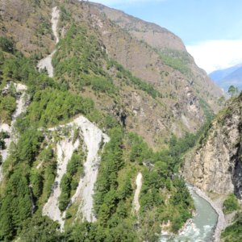

Research
Current project:

"State-wide assessment of California coastal cliff erosion and retreat"; PI: Dr Adam Young, Scripps Institution of Oceanography, USA (2020-2022); post-doc
Past projects:

"Earthquake-triggered landsliding in Nepal during and post monsoon"; PI: Prof. Nick Rosser, Durham University, UK (2019-2020); post-doc
I am interested in coastal processes, topographic change detection, remote sensing and machine learning methods.
Involvement in scientific projects: